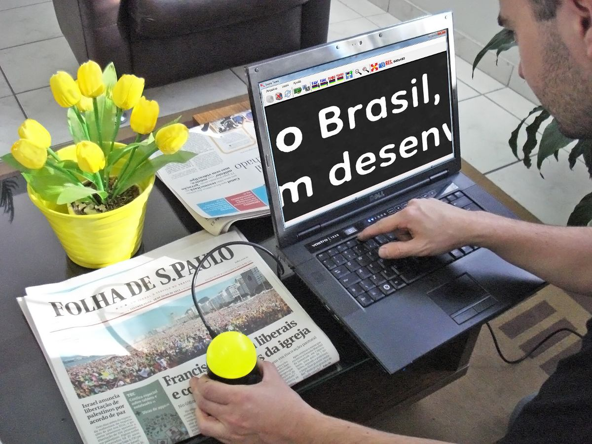

Lupa Bolinha
A revolução na ampliação visual! Lupa eletrônica nacional com ampliação de 10 a 60 vezes, iluminação LED e mais de 56 modos de vídeo. Interface USB simples como um mouse, perfeita para idosos e pessoas com baixa visão.
✓ Produto Nacional
✓ 12 meses garantia
✓ USB Plug & Play